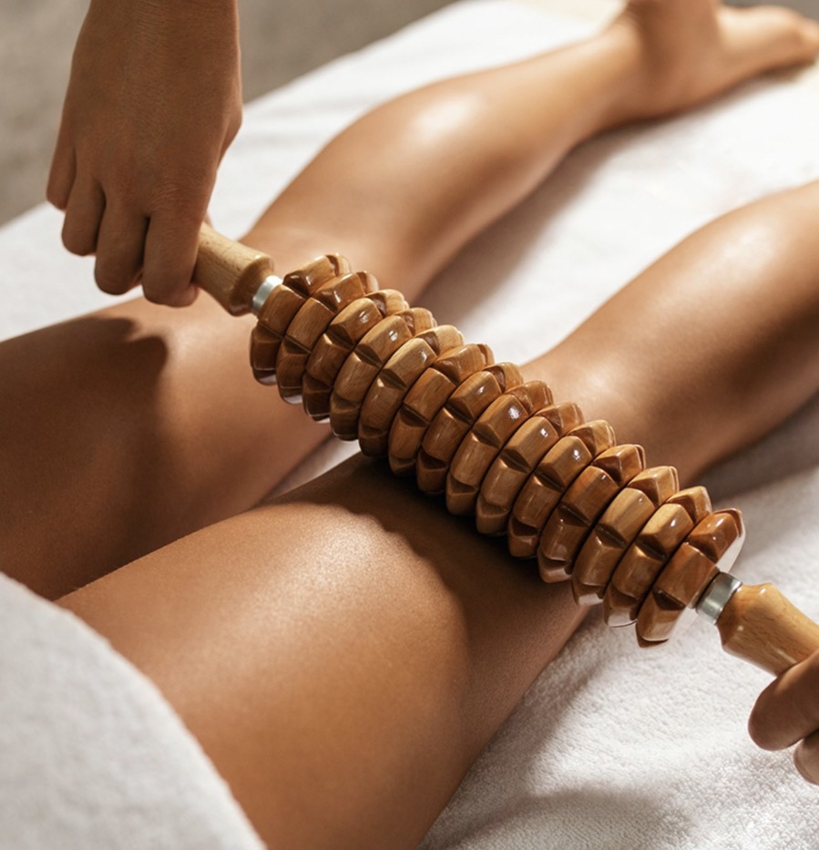

Qu’est-ce que la madérothérapie ?
La madérothérapie est un massage utilisant des accessoires en bois de différentes formes. Le travail est réalisé de manière ciblée sur les zones définies ensemble avant la séance.
Soin signature
Massage remodelant & silhouette

Le soin
La madérothérapie est un massage utilisant différents accessoires en bois pour travailler de manière ciblée les zones choisies.
Ma madérothérapie signature débute par quelques manœuvres de drainage inspirées de la méthode Renata Franca, avant de passer au travail avec les accessoires en bois.
Ce temps préparatoire est inclus dans l’heure de soin et ne constitue pas un drainage complet.
Les manœuvres et leur intensité sont adaptées à votre confort. Le soin peut être ciblé sur le ventre, les jambes, les fesses ou les bras. Les zones travaillées sont définies ensemble selon vos besoins et le temps réservé.
À domicile
Profitez de votre soin sans avoir à vous déplacer. Je propose des séances de madérothérapie à domicile en Seine-et-Marne (77), exclusivement auprès des femmes.
Messy · Claye-Souilly · Mitry-Mory · Villeparisis · Charny · Gressy · Compans · Fresnes-sur-Marne
Autres communes : sur demande selon la distance.
Votre séance
1 heure de soin
* Les zones travaillées sont adaptées à vos besoins et au temps réservé. Une séance d’une heure ne comprend pas systématiquement le corps entier.
Tarif hors frais de déplacement.
Ventre · Jambes · Fesses · Bras
Réserver sur WhatsAppQuestions fréquentes
La madérothérapie est un massage utilisant des accessoires en bois de différentes formes. Le travail est réalisé de manière ciblée sur les zones définies ensemble avant la séance.
Ma séance associe quelques manœuvres préparatoires de drainage inspirées de la méthode Renata Franca au travail avec les accessoires en bois. Cet enchaînement est adapté à vos besoins et à votre confort.
Non. Quelques manœuvres de drainage sont intégrées en début de séance, avant la madérothérapie. Ce temps préparatoire fait partie de l’heure réservée et ne constitue pas un drainage complet.
Pas systématiquement. Le tarif correspond à une durée de soin. Les zones travaillées sont adaptées à vos besoins et au temps réservé, sans garantie de travailler le corps entier en une heure.
Le soin peut être ciblé sur le ventre, les jambes, les fesses ou les bras. Nous définissons ensemble les zones à privilégier selon vos besoins et le temps disponible.
La pression et les manœuvres sont adaptées à votre confort. Vous pouvez me signaler toute gêne pendant la séance afin que j’ajuste l’intensité ou le travail réalisé.
La séance de madérothérapie signature est proposée à 70 € pour une heure de soin, hors frais de déplacement.
Cette heure comprend les manœuvres préparatoires de drainage et le travail avec les accessoires en bois. Le tarif dépend du temps réservé, et non du nombre de zones.
Les séances de madérothérapie à domicile en Seine-et-Marne (77) sont proposées à Messy, Claye-Souilly, Mitry-Mory, Villeparisis, Charny, Gressy, Compans et Fresnes-sur-Marne, exclusivement auprès des femmes.
Les déplacements vers d’autres communes peuvent être étudiés selon la distance.
La réservation se fait directement par WhatsApp. Indiquez votre ville, vos disponibilités et les zones que vous souhaitez privilégier afin d’organiser votre rendez-vous.
Votre soin, chez vous
1 h · 70 €* · Seine-et-Marne (77)
* Les zones travaillées sont adaptées à vos besoins et au temps réservé. Une séance d’une heure ne comprend pas systématiquement le corps entier.
Tarif hors frais de déplacement.
Prendre rendez-vous